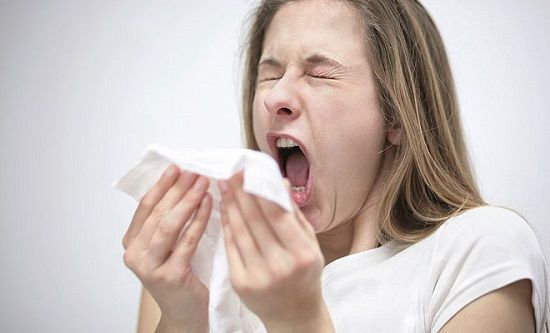
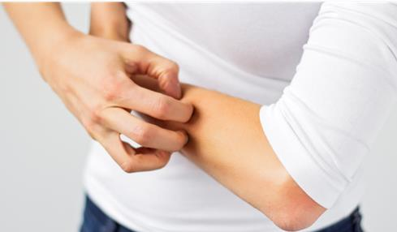
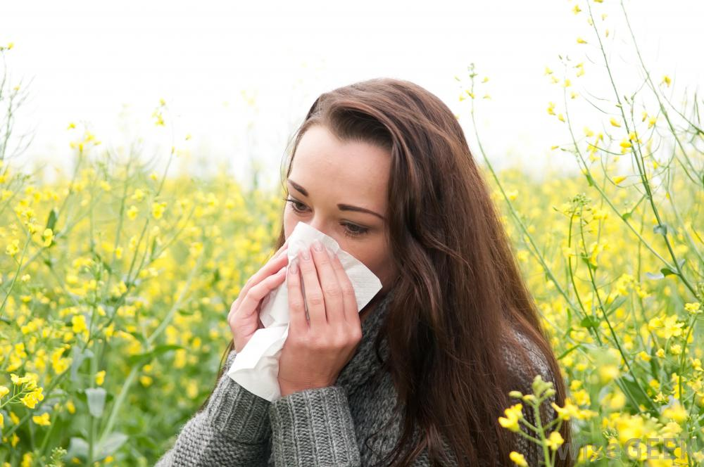
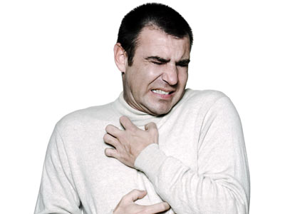
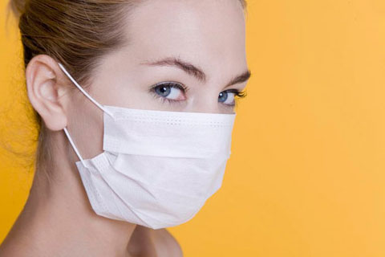
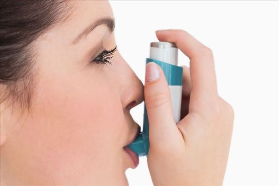

我的体质测试结果
我的体质是
特禀质
根据您的体质辨识结果，建议您从特禀质开始调理，特禀体质的形成多因禀承于父母，据其体质特征皆由气虚卫表不固，血热易于风动，素禀不耐异气之邪为患。
     
特禀，是什么意思？
过敏！过敏！过敏！
在不感冒的情况下也常常会鼻塞、打喷嚏、流鼻涕，对药物、食物、气味、花粉非常容易过敏，有的有荨麻疹，皮肤常有紫红色的斑点，用手一抓就红。
特禀质该怎办？
中医认为气虚则肌腠疏松，卫外不固，而正气不足，就容易受到外邪的侵袭。
西医西药目前对过敏这种特禀质表现出的特殊症状没有彻底改变的方法。使用中药调整体质可以很大程度缓解或者彻底改变过敏体质。
我为什么会过敏？
现代城市的生活方式。
熬夜，咖啡，烟，酒。
反季节穿衣，过度使用空调。
高热量的加工食物。
遗传，或者工作环境。
滥用药物。
特禀体质更容易患哪些疾病？
过敏性鼻炎、过敏性紫癜、荨麻疹等过敏性疾病。
胎传疾病如：胎寒、胎热、胎惊、胎肥、胎弱。
轻妍教你这么改善！
饮食调理：
特禀体质的人应多吃一些益气固表、凉血消风、补益五脏的食物，比如糙米、果蔬等，在滋养红细胞的同时防止异体蛋白进入血液还可以多吃一些绿豆、冬瓜、莲子等能够清热、解毒、利湿的食物。
特禀体质的人不要吃发性食物，发性食物会引发过敏反映或加重过敏症状。比如荞麦、蚕豆、扁豆、鹅肉、鱼类、虾类、蟹类、辣椒、浓茶、酒等食物。
忌食八大致敏食品：花生、大豆、牛奶、鸡蛋、鱼类、贝类、小麦和坚果。
中药调理：
特禀体质的人适当服用一些补气、补血的药物，常见有：人参、黄芪、白术、灵芝、当归、熟地、阿胶等。还可以服用一些抗过敏的药如：乌梅、紫苏、甘草等。
起居有常：
保持好睡眠习惯，早起、不熬夜。现代生活的模式下，过敏体质的人越来越多，这和违背自然规律的生活方式有密不可分的关系。
适度运动：
微微的出汗有助于改善皮肤的新陈代谢，但不可运动过度，反倒消耗气血。
情绪调节：
七情适度，顺其自然，不急不缓。
网站首页
一键拨号
体质分析